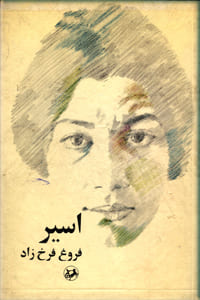
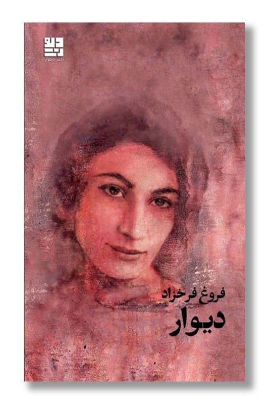
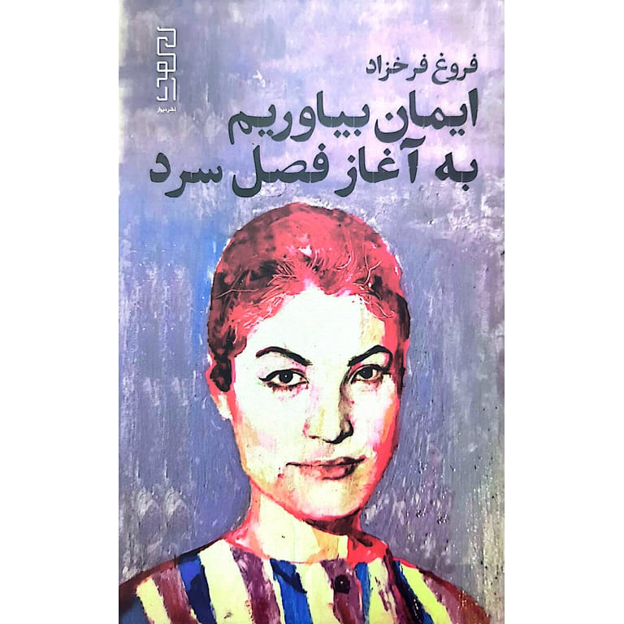
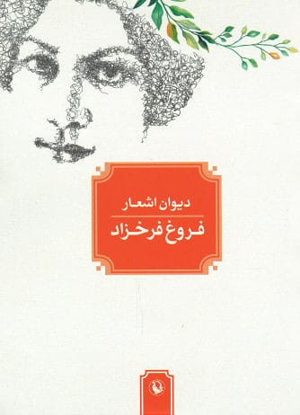

تصاویر کتابهای شعر

اسیر (۱۳۳۱)

دیوار (۱۳۳۵)

عصیان (۱۳۳۶)

تولدی دیگر (۱۳۴۳)

ایمان بیاوریم...

مجموعه کامل اشعار
اولین مجموعه شعر در قالب چهارپاره با درونمایه عاشقانه
دومین مجموعه با مضامین اجتماعی و اعتراضی
سومین مجموعه که صدای اعتراض شاعر رساتر میشود
شاهکار فروغ و نقطه عطف شعر معاصر فارسی
آخرین مجموعه که پس از مرگش منتشر شد
در اتاقی که به اندازهی یک تنهایی است، دل من
که به اندازهی یک عشق است
به بهانههای سادهی خوشبختی خود مینگرد
به زوال زیبای گلها در گلدان
به نهالی که تو در باغچهی خانهمان کاشتهای
و به آواز قناریها
که به اندازهی یک پنجره میخوانند ....
ایمان بیاوریم به آغاز فصل سرد
زیستن شاید این است
کاشتن درخت نارون
در نگاهی که به ابدیت میشورد
و این منم
و قلب بیقرارم
که در سینهاش
همیشه
و همیشه
صلحی گمشده را جستجو میکند
پرواز را به خاطر بسپار
پرنده مردنی است
در طلوع
باید به ابدیت اندیشید
باید به ابدیت اندیشید
و در شب
وقتی که خواب
شاخههای بید مجنون را
در باد تکان میدهد

اسیر (۱۳۳۱)

دیوار (۱۳۳۵)
عصیان (۱۳۳۶)
تولدی دیگر (۱۳۴۳)

ایمان بیاوریم...

مجموعه کامل اشعار